OM3 data-poor stock assessment
2022-11-29
15_OM3_data_poor_stock_assessment_2009.RmdCase 0: stock assessment base run (terminal year = 2009)
B0
Case 0: scenario A
Case 0: scenario B
- Case 0: scenario C
- Add 11 years of equilibrium catches (max catch) to the start of the catch
- Try a sequence of Dep (0.1 - 0.9 with interval of 0.05), BMSY_B0 (0.1 - 0.9 with interval of 0.05), and FMSY_M (0.1 - 2.0 with an interval of 0.05) and find the scenario that has the lowest sum of squared differences
Linear regression models from cases 1 - 5 using “true” values from EwE
Case 1: Link Atlantic Multidecadal Oscillation Index with menhaden biomass estimates and adjust projections: AMO is an indicator of climate conditions and would affect recruitment variability of menhaden-like species
Case 2: Link Palmer drought severity index with menhaden biomass estimates and adjust projections: PSDI is a long-term indicator of drought conditions and it reflects river discharge and precipitation
Case 3: Link biomass of Striped bass from the EwE with menhaden biomass estimates and adjust projections because bass is a major predator
Case 4: Link fishing effort of menhaden with menhaden biomass estimates and adjust projections
Case 5: Link catch per unit effort of menhaden with menhaden biomass estimates and adjust projections
-
Linear regression models from case 1 - 5 (Lag = 1)
- True biomass of menhaden-like species as functions of AMO, PDSI, biomass of striped bass, fishing effort of menhaden, and menhaden CPUE
Status of indicators (SOI)
If stock-indicator relationship is positive, \(SOI_{y} = \frac{I_{y}-I_{y}^{min}}{I_{y}^{max}-I_{y}^{min}}\)
-
If stock-indicator relationship is negative, \(SOI_{y} = 1-\frac{I_{y}-I_{y}^{min}}{I_{y}^{max}-I_{y}^{min}}\)
where \(I_{y}\) represents indicator value in year y. \(I_{y}^{min}\) and \(I_{y}^{max}\) represent the minimum and maximum values of \(I\) from the time series.
Adjust projections
If \(\frac{B2009_{i}}{BMSY} > 1\), \(F^{'}_{i} = FMSY^{min} + SOI2009 \times (FMSY^{max}-FMSY^{min})\)
If \(\frac{B2009_{i}}{BMSY} \le 1\) and \(\frac{B2009_{i}}{BMSY} > 0.5\), \(F^{'}_{i} = SOI2009 \times \frac{B2009_{i}}{BMSY} \times FMSY_{i}\)
If \(\frac{B2009_{i}}{BMSY} \le 0.5\), \(F^{'}_{i} = 0\)
where \(i\) represents individual iterations

Cases 1-5 are based on the settings from Scenario A
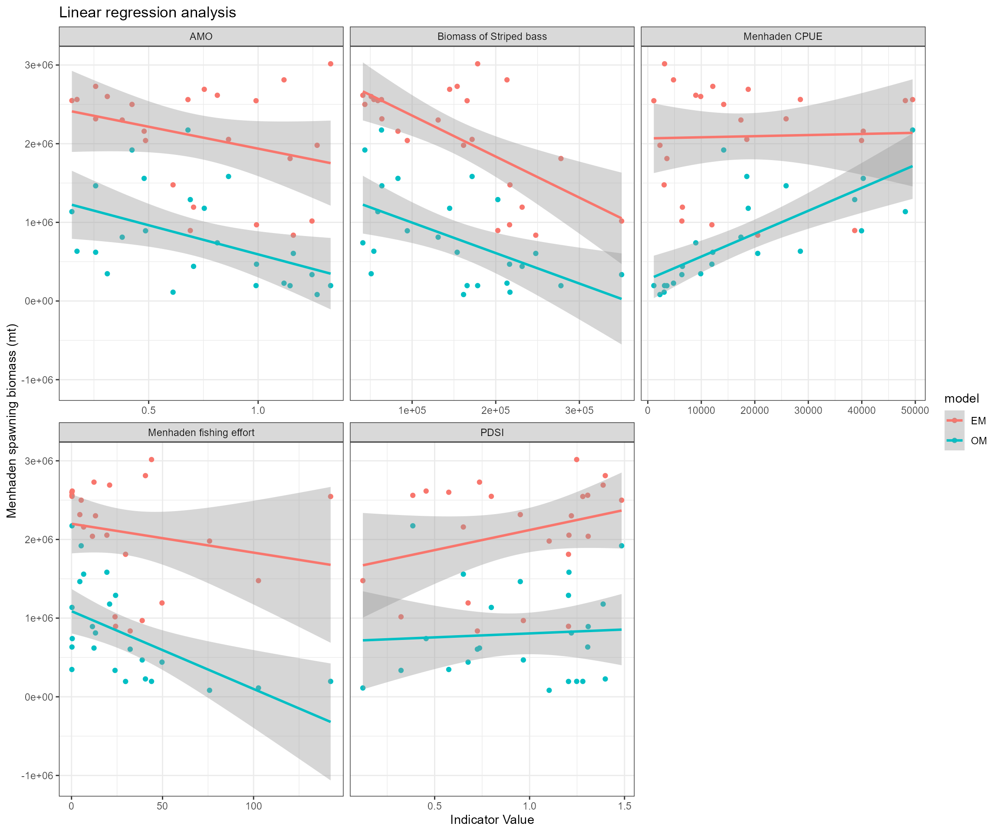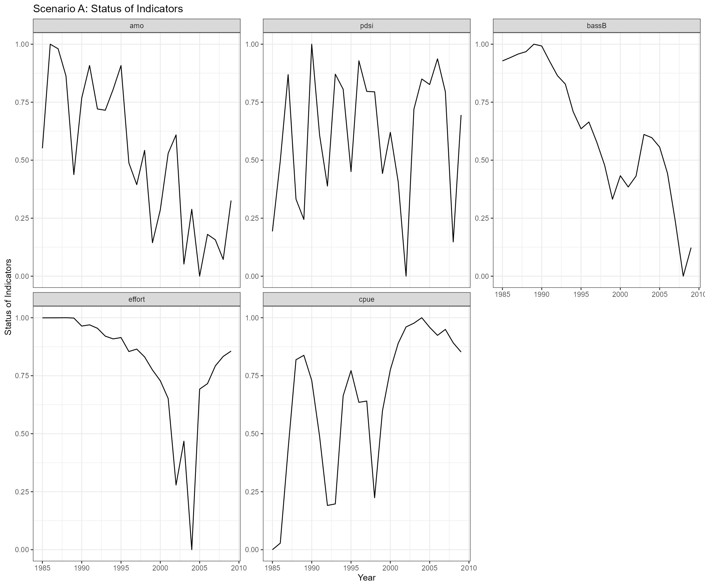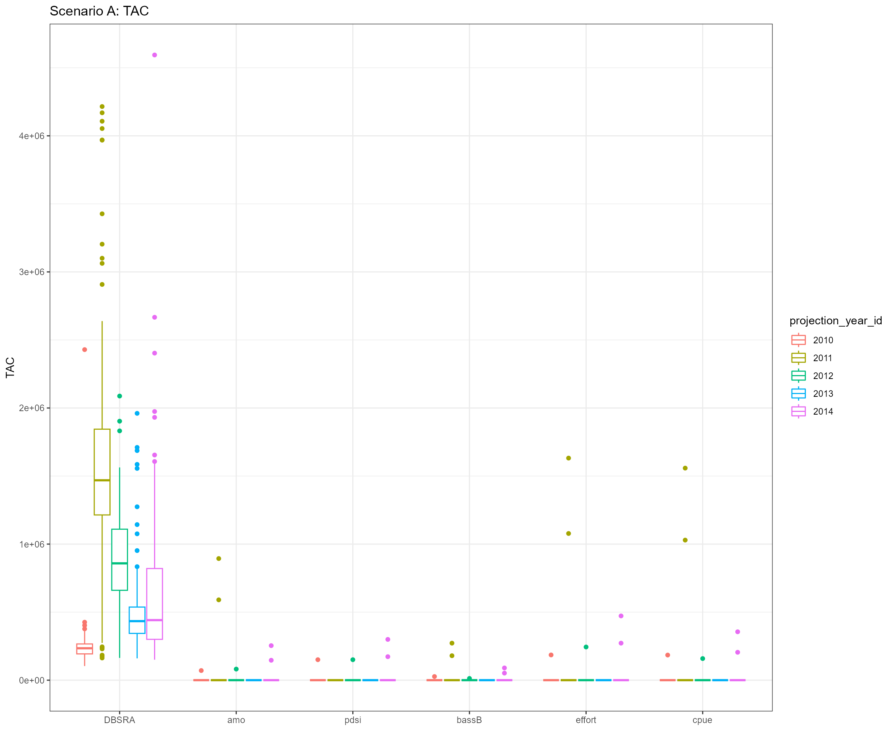
- Slope values from linear regression models
| case | projection_year | amo | pdsi | bassB | effort | cpue |
|---|---|---|---|---|---|---|
| scenario A | 2010 | -556668.92 | 510714.03 | -5.22* | -3669.81 | 1.42 |
| scenario A | 2011 | -995129.81 | -1295120.86 | -4.83 | -9558.4 | 4.1 |
| scenario A | 2012 | -725337.85 | -2379502.53* | -4.59 | -5423.52 | 6.25 |
| scenario A | 2013 | -862418.78 | -954770.26 | -2.91 | -1703.27 | -5.48 |
| scenario A | 2014 | -1939032.92* | -570595.74 | -7.16* | -5398.53 | 9.33 |
Cases 1-5 are based on the settings from Scenario B
 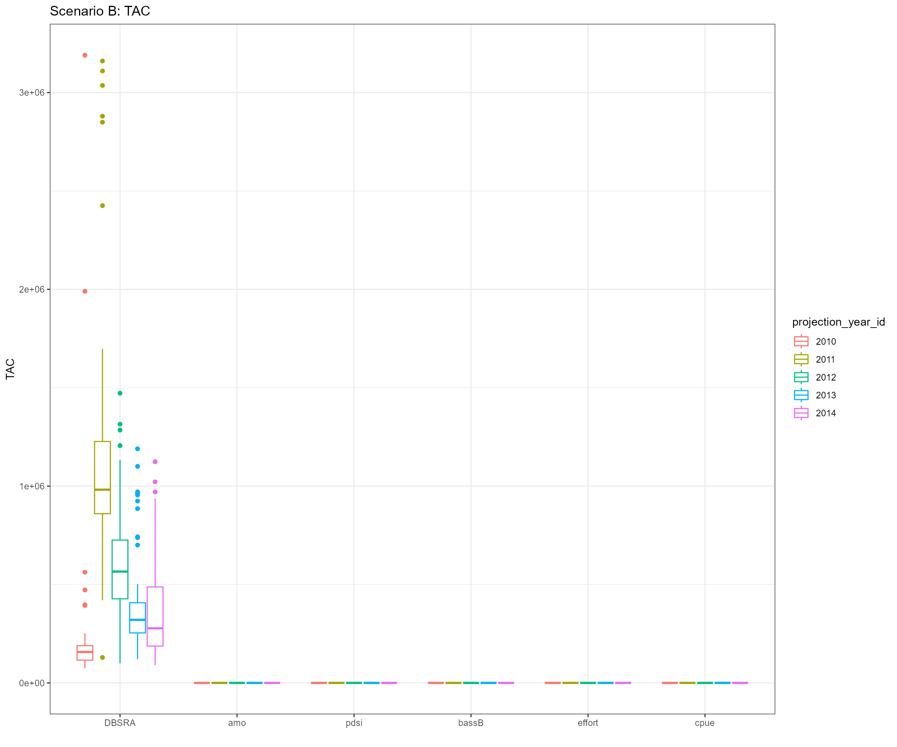
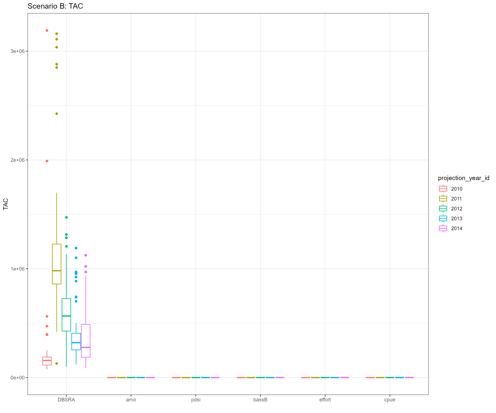
- Slope values from linear regression models
| case | projection_year | amo | pdsi | bassB | effort | cpue |
|---|---|---|---|---|---|---|
| scenario B | 2010 | -586049.46 | 457173.59 | -5.15* | -3993.98 | 2.22 |
| scenario B | 2011 | -1172145.8 | -1225560.85 | -5.85 | -10690.66 | 6.43 |
| scenario B | 2012 | -970854.74 | -2568483.42* | -5.53 | -10476.24 | 13.88 |
| scenario B | 2013 | -978530.29 | -1005100.46 | -3.41 | -3404.71 | -2.25 |
| scenario B | 2014 | -1527395.64* | -710305.78 | -6.57* | -2247.19 | 4.26 |
Cases 1-5 are based on the settings from Scenario C
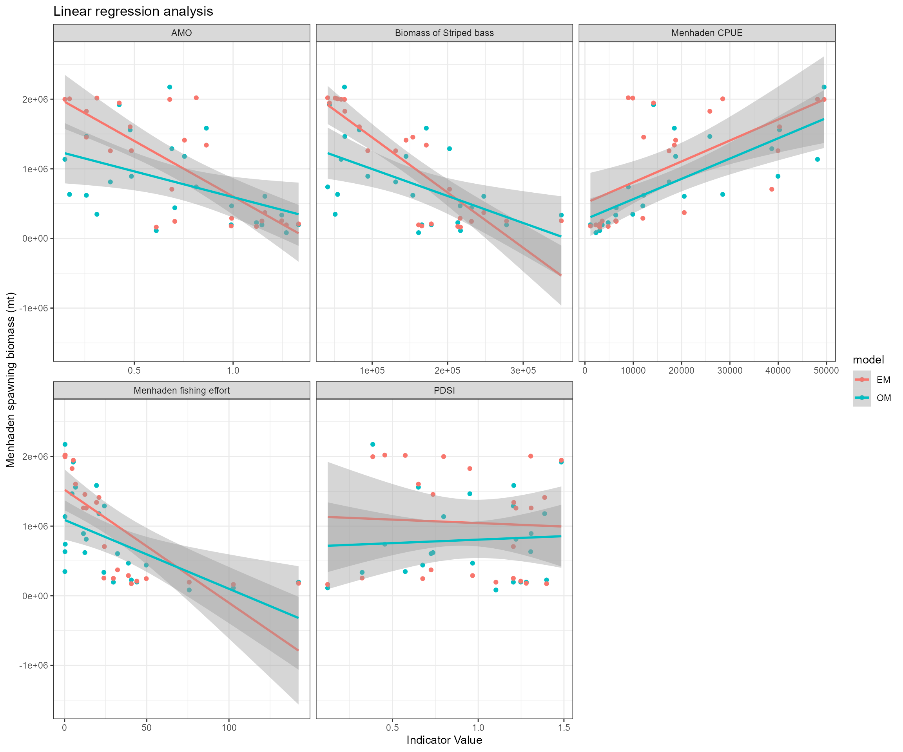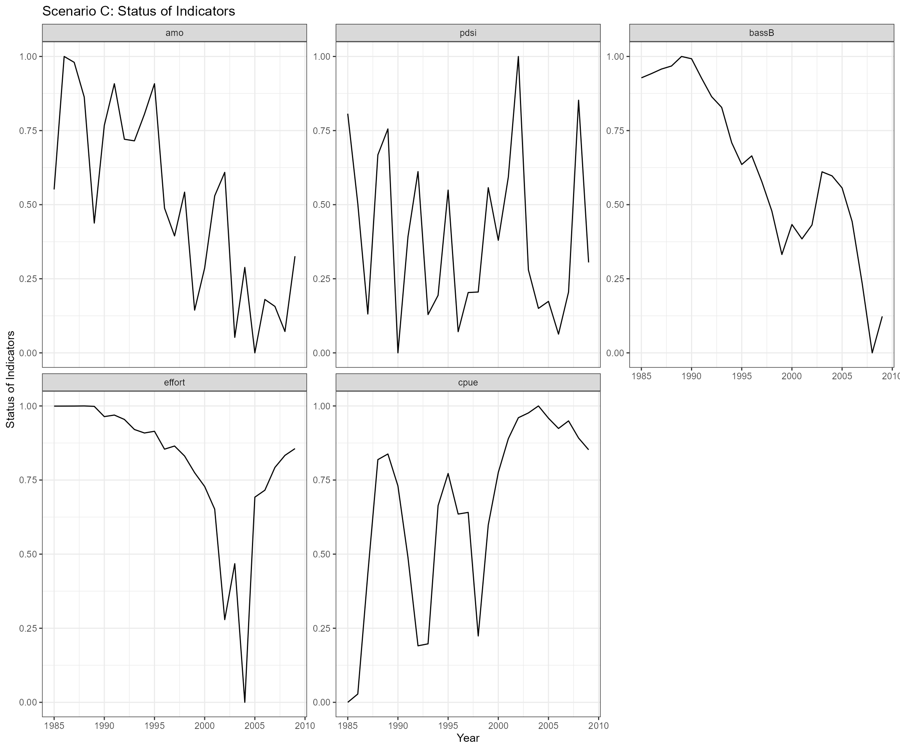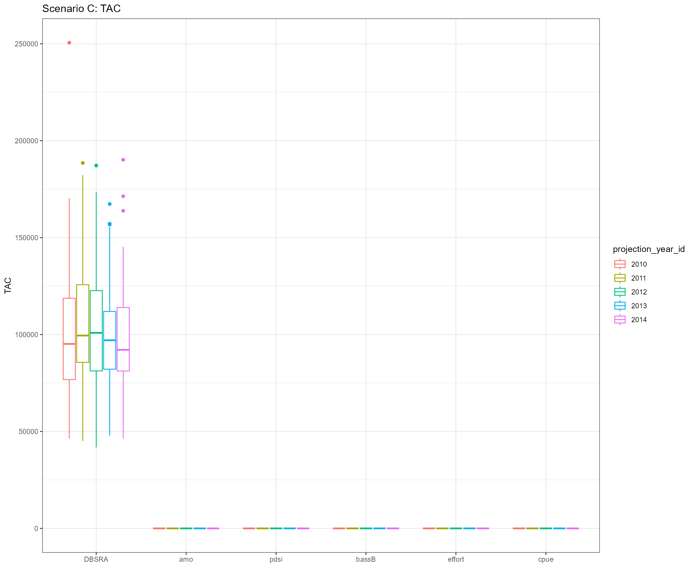
- Slope values from linear regression models
| case | projection_year | amo | pdsi | bassB | effort | cpue |
|---|---|---|---|---|---|---|
| Scenario C | 2010 | -1596030.39* | -99804.49 | -7.92* | -16232.59* | 30.07* |
| Scenario C | 2011 | -1658356.08* | -147112.76 | -7.55* | -17030.85* | 31.59* |
| Scenario C | 2012 | -313615.93 | 128810.34 | -1.83 | -6865.05* | 3.39 |
| Scenario C | 2013 | -419454.95 | 93714.12 | -1.61 | -8942.98* | 6.26 |
| Scenario C | 2014 | -523045.47 | 66600.66 | -1.55 | -10862.71* | 9.31 |
- Projections 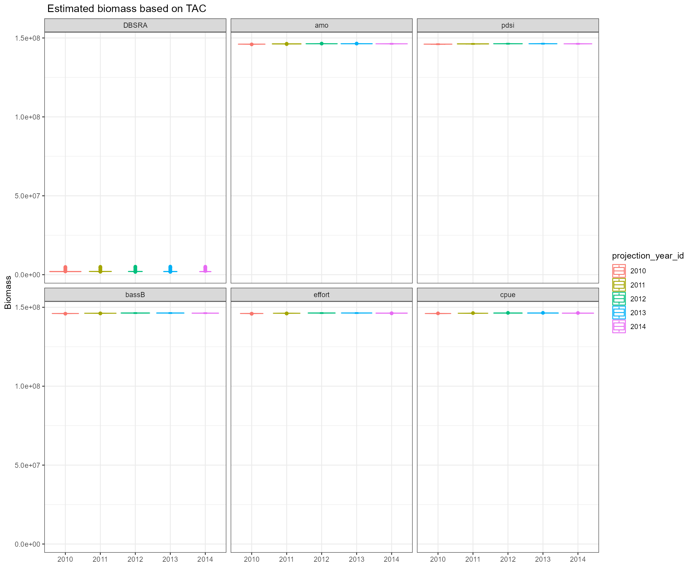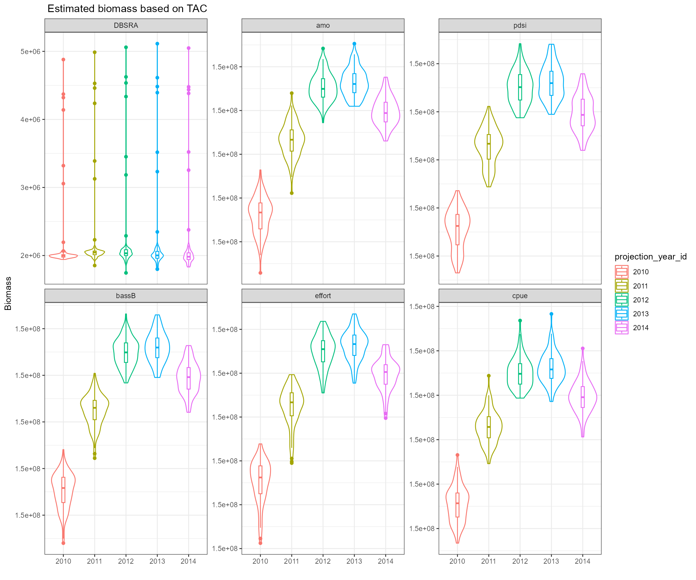
## Average_Catch B_K B_BMSY Average_Biomass
## Max 306770 0.4127 0.698 1.46e+08
## Min 0 0.0000 0.000 0.00e+00
## OM+OM FMSY 306770 0.0673 0.114 4.09e+05
## OM+DBSRA FMSY 196179 0.2633 0.445 7.73e+05
## OM+AMO Fadj 48960 0.3906 0.661 9.67e+05
## OM+PDSI Fadj 45993 0.3929 0.664 9.71e+05
## OM+Bass Biomass Fadj 19241 0.4127 0.698 1.00e+06
## OM+Effot Fadj 115867 0.3371 0.570 8.86e+05
## OM+CPUE Fadj 25636 0.4080 0.690 9.94e+05
## DBSRA EM+DBSRA FMSY 96947 0.0984 0.219 2.01e+06
## DBSRA EM+AMO Fadj 0 0.0981 0.218 1.46e+08
## DBSRA EM+PDSI Fadj 0 0.0979 0.218 1.46e+08
## DBSRA EM+Bass Biomass Fadj 0 0.0985 0.219 1.46e+08
## DBSRA EM+Effort Fadj 0 0.0976 0.217 1.46e+08
## DBSRA EM+CPUE Fadj 0 0.0978 0.219 1.46e+08
## Bonanza_Period Collapse_Period
## Max 5 0
## Min 0 5
## OM+OM FMSY 0 3
## OM+DBSRA FMSY 0 1
## OM+AMO Fadj 0 1
## OM+PDSI Fadj 0 1
## OM+Bass Biomass Fadj 0 1
## OM+Effot Fadj 0 1
## OM+CPUE Fadj 0 1
## DBSRA EM+DBSRA FMSY 0 5
## DBSRA EM+AMO Fadj 0 5
## DBSRA EM+PDSI Fadj 0 5
## DBSRA EM+Bass Biomass Fadj 0 5
## DBSRA EM+Effort Fadj 0 5
## DBSRA EM+CPUE Fadj 0 5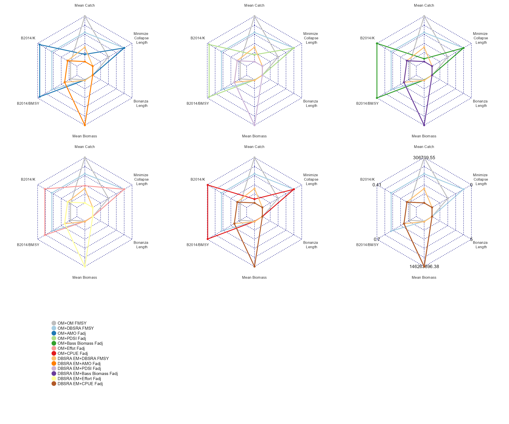